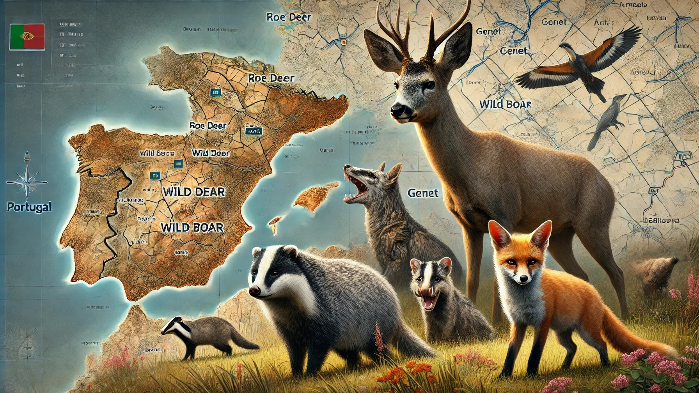
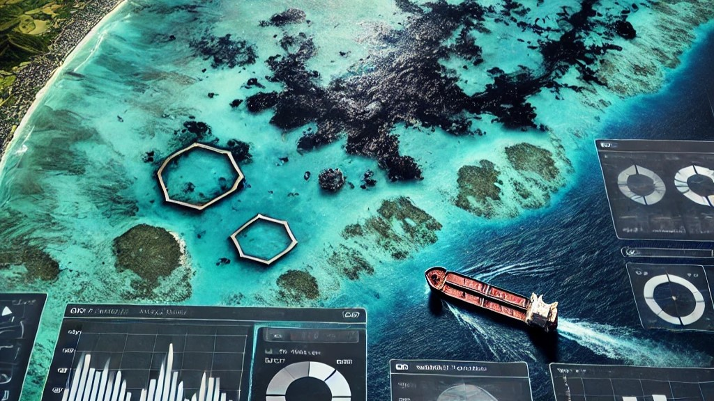
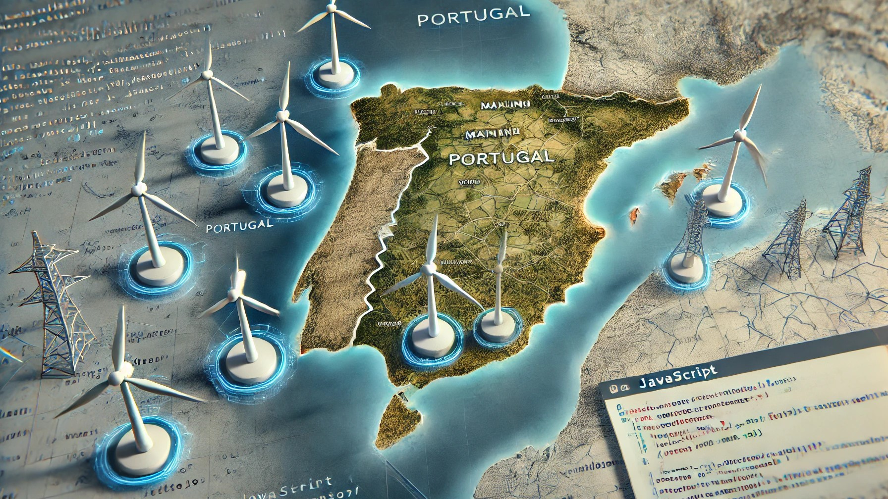
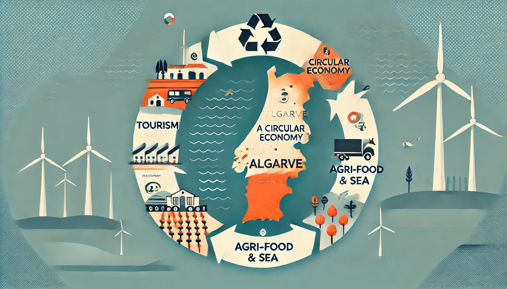
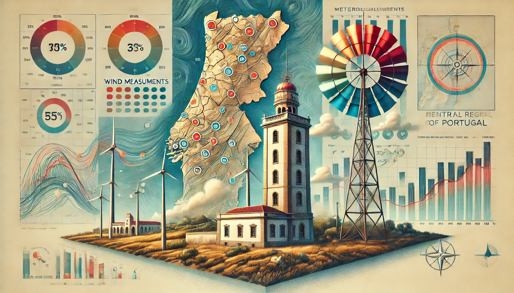

Palombar's camera trapping in Northeast Portugal, combined with QGIS, PostgreSQL, and PostGIS, enhances local biodiversity management by mapping species distribution and habitat preferences.

Satellite image analysis of the 2020 oil spill in Mahébourg, Mauritius, using Sentinel-1 SAR and Sentinel-2 optical data, combined with deep learning and supervised classification techniques in ArcGIS Pro.

An interactive map of Portugal's wind energy infrastructure using the Leaflet library, integrating vector and raster data, with tools for drawing and measuring, and various custom functionalities.

Analyzing the waste profiles in the Algarve's tourism, sea, and agri-food sectors, it identifies opportunities for reuse and proposes new business models to support the region's transition to a circular economy.

Developing an interpolated surface of daily average wind speed in central Portugal using Empirical Bayesian Kriging Regression, this work integrates meteorological data and a DEM to aid wind energy project planning.

Donec eget ex magna. Interdum et malesuada fames ac ante ipsum primis in faucibus. Pellentesque venenatis dolor imperdiet dolor mattis sagittis magna etiam.